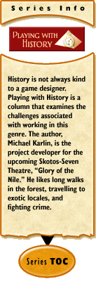

|
Playing with History #5: Social Classby Michael Karlin “We of the sinking middle class... may sink without further struggles into the working class where we belong, and probably when we get there it will not be so dreadful as we feared, for, after all, we have nothing to lose but our aitches.” — George Orwell Social class is a mostly perceived phenomenon whereby people, whether explicitly or not, are ranked above or below one another based on different factors. This is an interesting segway from the subsection on anachronisms, because social class is a concept universal to history. It was an issue when time started, and it continues to be an issue today. What differs is the way in which social class has manifested itself. When choosing a historical epoch, keep in mind the social class structure. Having too little class mobility - or the ability to go up or down in social hierarchy - may incur the frustration of your player base. Realistically, players won't pay money to be someone's slave month after month. This is not to say that social mobility should be easy per se, just that it should be a challenge that is possible for players to attain provided a certain amount of time and effort is given. In this article I will review various archetypes of social class that can be applied to an online RPG, review the pros and cons, and talk a little about what we plan to do in Glory of the Nile. Social ClassThis list is not going to be exhaustive. As well, social class is an evolving, dynamic structure, so it will be imperfect.
Associational
Ethnic
Inherent
Socioeconomic
Technocratic
Mixing and MatchingReaching your preferred social class structure will be a process of taking a wallop of one and a dab of another. Balancing one over the other is easy once you have your gameplay in mind. If you have a moneyless economy like Marrach, a socioeconomic class structure will detract from gameplay, because it makes an intrinsically immaterial game material. Glory of the Nile has a very mixed class structure system based mostly on a mix between inherent, socioeconomic, and technocratic. The inherent factors are few and blatantly obvious: Pharaoh is a god and you are not, therefore listen or be punished (if you're caught). However, beneath him and the Royal Family, it's fair game. You will find it a lot less stratified than Castle Marrach, as there are no inherent ranks your character can climb. At that point it becomes mainly socioeconomic and technocratic. Noble families are only that way because a) they are rich, or b) they have a position that affords them great power of another sort. This way, while a PC will never be Pharaoh, rising as far as nobility is a distinct possibility in Thebes. However, it is important to note that we will be incorporating certain aspects of ethnic social hierarchy to the degree that a player wishes. The character creation script will allow you to select your ethnic group. Choosing to play an ethnic Egyptian allows you to avoid any ethnic strains. Certain ethnicities, such as Nubians, will come with minor but easily surmountable issues attached. Playing a Libyan is a whole different story... but a very rewarding roleplay experience. The social structure you choose is important because it defines the methods characters will advance and develop. It is one of the many variables that sets the opportunities available for a character. Make sure that you invest a lot of time researching the social structure of your desired region and era. It will pay off. In two weeks: the concept of winning and losing in a historical context.
|